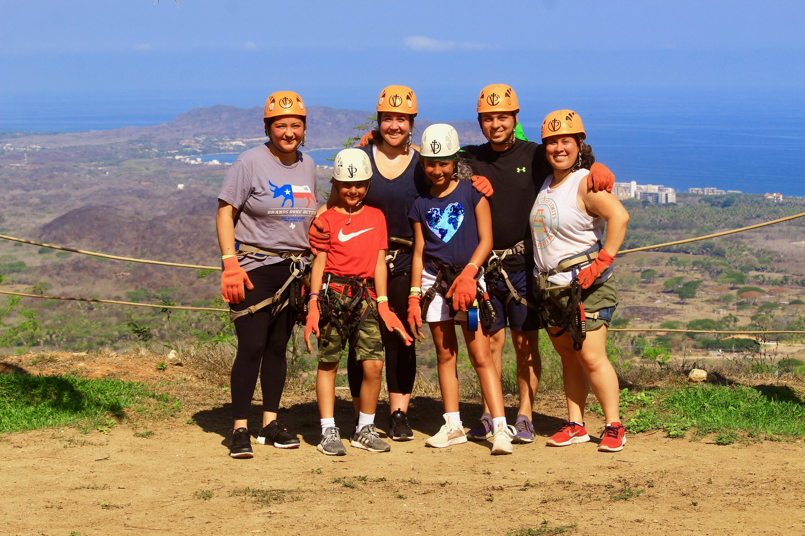
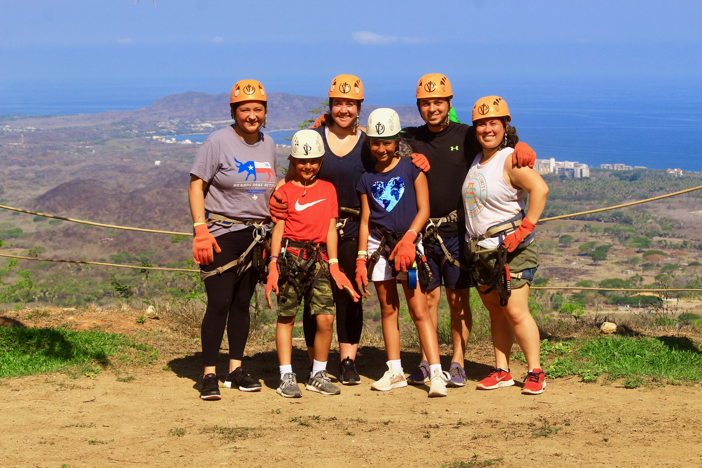

Oscar Fernandez
For my presentation, I chose to share about my trip to Mexico this summer! There were 16 of us including my family, cousins, and a few friends. We flew to Puerto Vallarta, when we landed all 16 of us squeezed inside a mini van including everyone's luggage. We stayed at a resort for a week, in those days, we did so much, such as swimming, playing soccer on the beach, and of course eating! Although the hotel offered many actitvities, we explored the city a few times. A little town and market called Sayulita was one of the cites we visited. My cousins, and my sister and I had the opportunity to zipline across the jungle and mountians, that just so happened to be near the ocean. One of the main reasons for this trip was celebrating my aunts birthday, which this is the place she was born and raised her children. This vacation is something I will never forget!

 

If you ever consider going to Puerto Vallarta, I highly recodmend it! With there being so many activities, excursions, and sites to see, you will not regret it!